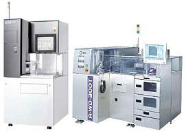

Common Die
Preparation-related
Failure Mechanisms:
Die
Lifting - detachment of the die from the die pad or cavity.
Wafer backside contamination during die preparation may inhibit good
adhesion between the die backside and the die attach material.
Other
Common Causes of Die Lifting: contamination on the die pad or cavity,
excessive die attach voids, incomplete die attach
coverage, inadequate die attach curing
Die
Cracking - occurrence of fracture
anywhere in the die. Incorrect wafer saw and washing
parameters can result in microcracks in the wafers, which can
propagate into larger die cracks during later stages of the assembly
process. Other Common Causes of Die
Cracking: excessive die attach
voids, die overhang or insufficient die attach coverage, excessive
die ejection force on the wafer tape
Die
Scratching - inducement of any
mechanical damage on the die, as when an operator scratches a die
with tweezers due to mishandling. Die scratches can also result from
mishandling of wafers during the die preparation process.
Other Common Causes of Die Scratching:
insufficient operator training, disorderly workplace, use of
improper tools
Die
Metallization Smearing - depression
or deformation of any metal line on the die surface.
Common Causes: dirty or worn-out
die attach pick-and-place tool, wafer mishandling
Die Corrosion
- corrosion of the metallization and other components of the die.
Common Causes:
corrosive contaminants on the wafer tape or rinsing water
Die Contamination
- contamination of the die
surface with silicon dust or foreign material that may be attached
either by electrostatic, mechanical, or chemical means.
Common Causes:
contaminated rinsing water; static charge
|

Fig. 1.
Photos of Wafer Saw Systems |
Front-End Assembly
Links:
Wafer Backgrind;
Die Preparation;
Die Attach;
Wirebonding;
Die Overcoat
Back-End Assembly
Links:
Molding;
Sealing;
Marking;
DTFS;
Leadfinish
See Also:
IC
Manufacturing; Assembly Equipment
HOME
Copyright
©
2001-2006
www.EESemi.com.
All Rights Reserved.